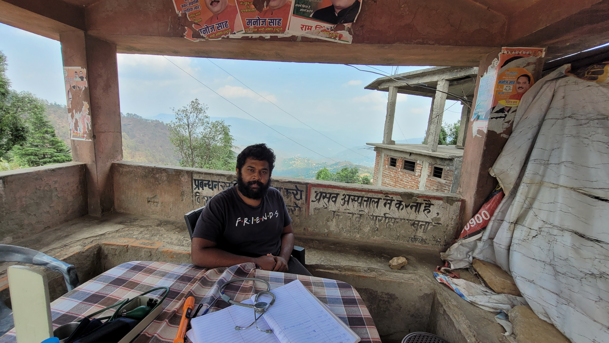
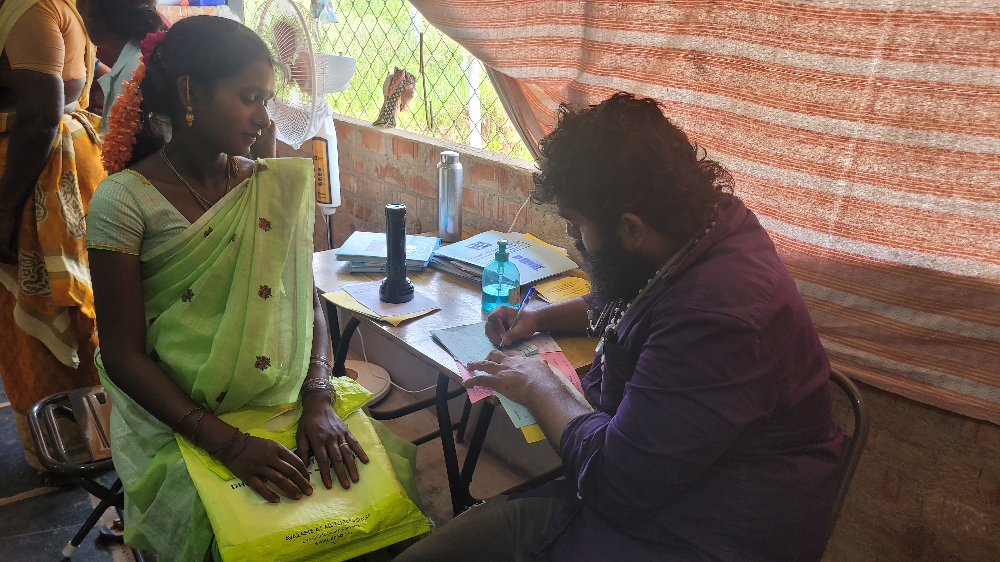
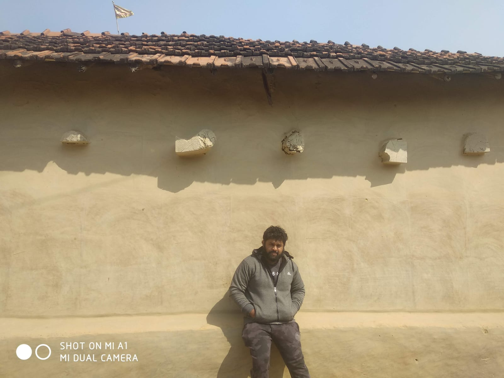

MY BIG BANG THEORY - HOW IT ALL BEGAN
You know, life holds the potential to take some unexpected turns. After completing my MBBS degree, I found myself at a crossroads. It struck me that sometimes, it's the small changes that lead to the most profound transformations in our lives. I was working hard, but I couldn't shake the feeling that I was working more for the approval of other doctors and the hospital staff than for the well-being of my patients. I slowly started to see how we are influenced by people who we surround ourselves with. I saw my seniors get frustrated with patients, and then I saw myself follow the same path knowing well enough that this isn’t who I wanted to be.
I visited Sittilingi for one of the Rural Sensitisation Camps. My friends and I looked at it as a wonderful opportunity for a getaway picnic. A 3-day time-off. But the RSP had an unbelievable impact on me, though not immediately. I remember dozing off at points and zoning out. I faintly remember conversations too. But that’s what! I was allowed to do that - I had the space to be me amongst some very senior health professionals. I then had this feeling of coming back to Sittilingi just to be there and work for some time, a thought I couldn’t act upon immediately due to circumstances.
While doing my bond after MBBS, I felt overworked and mentally exhausted. And that is when I came across the poster of the first batch of Travel Fellowship. I saw it, but couldn't act on it. I only remember thinking, ‘How nice would this be?’
When all my friends were preparing for PG, I didn’t feel ready for the same race. I was scared of becoming the person who yelled at patients from time to time and was dissatisfied. I was longing for a chance to make an informed decision. The Travel Fellowship was unusual, it excited me. When the second batch was out, I took the chance. My parents supported my decision and my friends were happy for me too. I’d like to believe they admired my courage to take this step that felt like just a distant dream for them. I had absolutely no expectations. I had no idea how things worked in low-resource areas. All I knew was that even in this one year of solo travel, I wasn’t alone. People have been working in these spaces for decades.
THE CHALLENGES
-The Blooming I have been a very quiet person. When I began the journey, I thought I was a complete misfit. I am not a very vocal person in new circles, and in Sittilingi, people are free to express whatever they think and believe. This was liberating and I took my time, a time so generously given for me to open up. -My relationship with empathy While talking to patients, I only asked them about their medical history and symptoms, because I felt like everything beyond this was unnecessary. I started with not knowing the true meaning of the word empathy, not feeling any towards patients too, only to find myself halfway through the fellowship, unable to hold back my tears. To my surprise, for the first time crying for others felt real. I wasn’t being empathetic because I kept telling myself, ‘I am in no position to do anything more about this.’ But now, I believe in the power of listening, especially in the most helpless of situations and I could see the relief in their face when they know that somebody is taking their time to listen. I would never learn any of these lessons anywhere else. -Am I in the right place? When I was in Jharkhand, I saw how the community was so strong and unified. I walked in and realized I wasn’t the center of attention in the room. I was the only doctor or even a qualified medical professional in the setting, and for days I felt like I wasn’t really needed. I remember calling my mentor and declaring, “I cannot stay here in Jharkhand, Anand. I am not a part of anything here.” I felt this strongly, but my discomfort pushed me to give it another chance. Jan Chetna Manch, Bokaro is not a hospital, but a maternal center because women delivering babies are not treated as patients instead a mother needing assistance. Every woman is accompanied by what looks like a village of health workers. The OPD doesn’t look like a hospital, it looks like a home. The women come in dressed up in sarees and bangles because they are always so happy to visit us. Even after their medical requirements have been taken care of, they would just stay not wanting to leave so quickly. For them, coming to JCMB is like a day out. No cesarean sections are performed unless absolutely required. The power of patient-centric care practiced here is empowering to say the least. -Trust and victories For 1 month I stood there in the labor room just observing. Then I gradually started to stand by the mother during deliveries. I helped the sisters there and assisted them. This is where I learned about - trust. I saw it build between me and the staff there day after day until I wasn’t a stranger anymore. Towards the second half of my tenure, the sisters felt free enough to wake me up from my sleep to inform me about a delivery. My responsibility was to be there for them night or day. I count this as one of my many invisible victories during the fellowship. I also worked on a protocol for neonatal management while in JCMB, an initiative by Dr. Rhea (my favourite pediatrician). Another victory. I also got Covid while in Jharkhand and not once did I feel homesick. I was taken care of as one of their own. When they didn’t hear me cough for a long time, they’d call to check in apart from the calls I received from them every 2-3 hours. The biggest victory, the victory that’s felt in the soul - to love and to be loved.
PATIENT STORIES
I remember a Patti (grandmother in Tamil) coming to our hospital in Sittilingi repeatedly with high blood sugars because she was not able to take insulin regularly. She was also admitted for the same. I visited her home and found out that she and her husband were looking after themselves long after their sons had moved out. They gifted all the land and money to their sons and were left with almost nothing. We then changed her course of medication. They were dependent on their neighbours for certain tasks (including taking insulins) which made many things impossible for them. Only when I visited her home did I realize her problems. Nobody wants to stay sick; everyone wants to feel healthy. This incident has stayed with me, with the lesson of understanding the contexts and stories of the people - especially and most importantly when you want to advise healthcare.
PROFESSIONAL GROWTH
Apart from so many awakenings, I have also become better clinically, thanks to the wonderful colleagues and seniors who helped me along the way. I have so much more confidence as a doctor and not the confidence that is fueled by others’ insecurities but the one that is strengthened when everyone feels empowered.
THE WORLD
I have been in settings where people are asked to do unnecessary tests with no additional information given to them. So much of money is spent by people who don’t fully understand what is wrong with their bodies and are expected to blindly follow instructions. When I go back to remember my interactions with people, I can now see the fear in their eyes that I was so oblivious to. Mothers in other hospitals are poked with so many needles that they are afraid to go to a hospital, but in JCMB, it was the complete opposite. In the centres I visited during the fellowship, the person was looked at with care. From doctor-patient second, to human-human first. Through my one year, I witnessed the power of primary care everywhere I went and the redundancy of tertiary care as much as it is given in today’s world. I preserve the knowledge received from low-resource settings and how health can be disseminated even in times where dead-ends surround me. The Fellowship has helped me see the world of health through my own eyes, and not through the system that exists today.
TO FELLOW DOCTORS
There is a dire need for doctors to reach the unreached, but I also understand that it isn’t easy to move out from the setting and take a year off. I found it difficult too but then, I listened to my gut and when a platform arrived, I took the chance. I recognise the race for PG/NEET and how this is considered a success. Joining the TF may feel like a big leap, so you can start small, by pausing first and thinking. Give it at least 3 days of your life and attend an RSP. Give it time. Pause and think.
POST-SCRIPT NOTE OF LOVE
A Thank you note for my companions - teachers and my fellow travelers – Pravin, Sangeetha, Rhea, Malini, RD, Arun, G3, Pradeepa, Joseph, Rani, Christy, Niranjana, Kalai, Surabhi, Divya, Nithin, Vasu, G, THA, Ravi, Prema, and the entire team of THI, Lindsey Barnes and the staff of JCMB, Kavi, Dr.Sushil, Dr.Poornima, – Cheers to the memories that I hold so close to my heart. And Vania for helping me verbalize my thoughts and experiences. To Dr. Anand Zachariah – my mentor in this fellowship. Even though I was skeptical about mentorship initially, Anand became an integral part with whom I shared my thoughts and sorrows, discussed my dilemmas and the list goes on. I have found a friend in him and I’m fortunate in that way. I just want to thank Anand for keeping me sane. I watched Tha (Lalitha, co-founder of THI) and she became my instant inspiration. How she wakes up every morning with revived zeal is beyond me. My happiest moments during the fellowship were not when I was a doctor but when I worked with the artisans in Porgai. (A tribal woman artisans association that has resurrected a dying art form through their embroidery) I was tired on many days but somehow, I was still fueled with energy, I think this is because I saw myself making an impact directly. The work done by these artisans is so beautiful. They expressed their love by making things for me too. I still feel connected and I continue to work with Porgai long after I have finished the fellowship. And I am sure, I won’t ever stop. Well, I need Porgai more than Porgai needs me. I don’t exactly know what they gave me, but I feel happy, grateful, and honored to have worked with them.
I escaped a monotonous life. If not for that one decision to take the year off, I would probably live blindly, unable to see the truth. Today, I have something I am truly proud of. The fellowship changed my life.
